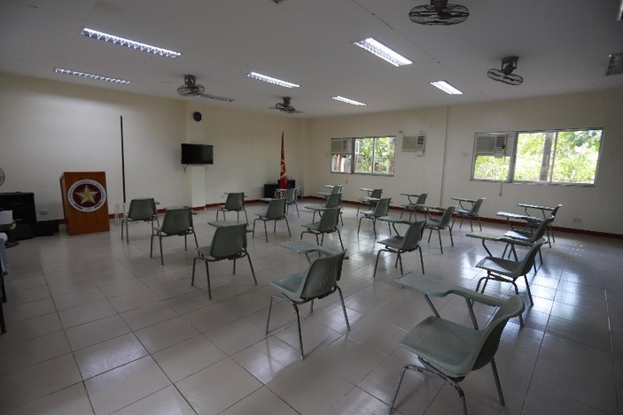
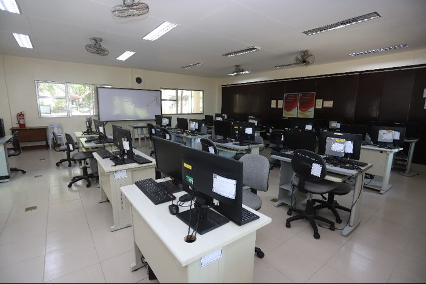
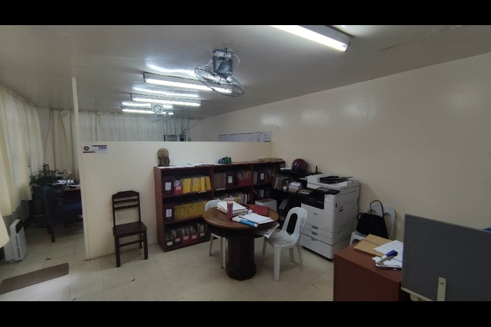
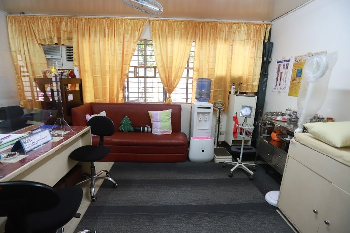
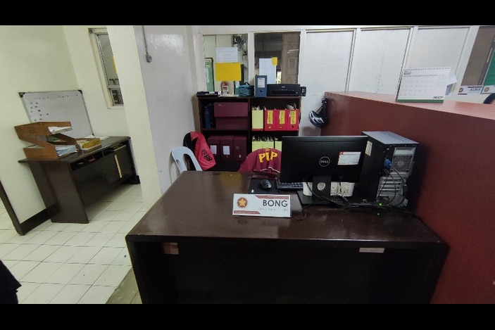
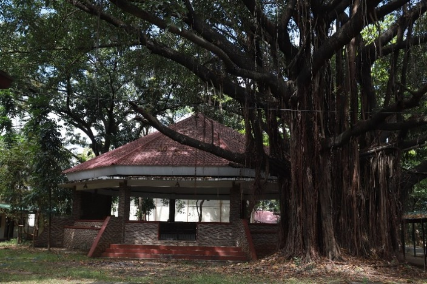
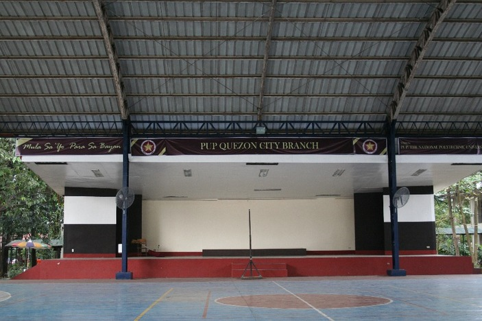
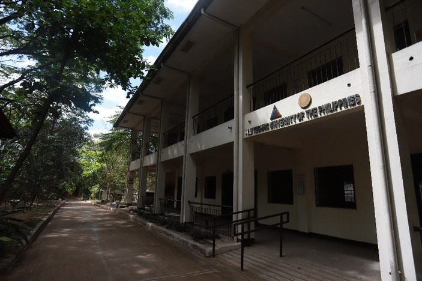
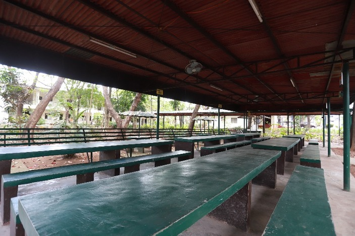

Audio Visual Room
Audio Visual Room, specialized facility equipped with
advanced multimedia technologies and resources to enhance the
teaching and learning experience.

Computer Laboratory Room
The Computer Lab Room is a dedicated facility
equipped with state-of-the-art computing technologies and
software, providing students with access to resources and tools
for research, projects, and coursework, and promoting digital
literacy and technological proficiency.

Office of Academic Program
The Office of the Academic Program aims to oversee
and enhance the academic quality of the program, ensuring that it
meets the standards of excellence and prepares students for
successful careers in their chosen field.

Medical Clinic
The Medical Clinic is a facility equipped with
medical professionals and resources to provide a range of health
services and programs to promote and maintain the physical and
mental well-being of students, faculty, and staff, and to support
a healthy campus environment.

Office of Student Affairs and Services
The Office of Student Affairs and Services is
dedicated to providing comprehensive support services and programs
that enhance the holistic development of students, foster their
personal and academic growth, and promote a safe, inclusive, and
thriving campus community.

Interfaith Chapel
An Interfaith Chapel is a sacred space designed to
provide a welcoming environment for people of all faiths and
beliefs to come together for prayer, reflection, and meditation,
fostering spiritual growth, understanding, and respect for
diversity.

Covered Court
The court is a hall where games and physical training
are held.

Academic Building
The Academic building is a physical space designed
and equipped to support various academic activities, including
teaching, learning, research, and administration, and to provide a
conducive environment for academic excellence and innovation.

Student Lounge
The student lounge is a designated area within the
campus where students can relax, socialize, and engage in various
recreational activities outside the classroom. It serves as a hub
for student life, promoting a sense of community, connection, and
well-being among the student population.